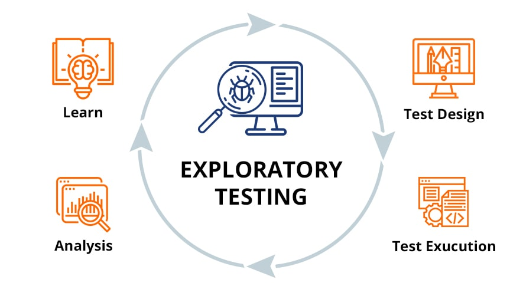

In a traditional setup, exploratory testing is a manual process where a human "wanders" through an app to find bugs. With the Playwright MCP server, you can direct an AI agent to do this using natural language.
This approach combines the flexibility of human exploration with the speed and consistency of automation.
1. How it Works for Exploratory Testing
1.1 Direct Interaction
You give a high-level prompt to the AI agent using natural language. For example:
"Explore the checkout flow and try to break it by entering invalid zip codes"
The AI understands the intent and begins exploring the application accordingly.
1.2 Structured Feedback
The Playwright MCP server provides the AI with a snapshot of the page's accessibility tree. This allows the AI to understand the structure and purpose of elements without needing vision models:
- Identifies that a button is labeled "Submit"
- Recognizes that an input field is for "Email"
- Understands the semantic relationships between elements
- Maps the page's interactive components and their roles
1.3 Autonomous Execution
The AI decides which actions to take based on the live state of the DOM, performing a "human-like" exploration of the site:
- Click: Interacts with buttons, links, and other clickable elements
- Type: Enters text into input fields, textareas, and forms
- Drag: Performs drag-and-drop operations when needed
- Navigate: Moves between pages and sections of the application
- Observe: Monitors changes and validates expected behaviors
This autonomous execution allows the AI to adapt to the application's state in real-time, making it ideal for discovering edge cases and unexpected behaviors.
2. PROMPT Template
2.1 Manual Testing Instructions
Use the following prompt template to direct the AI agent for exploratory testing:
# Manual Testing Instructions
Username: [your-username]
Password: [your-password]
1. Use the Playwright MCP Server to navigate to the website, take a page snapshot and analyze
the key functionalities. Then manually test the scenario provided by the user. If no scenario
is provided, ask the user to provide one. Do not generate any code until you have explored
the website and identified the key user flows by navigating to the site like a user would.
2. Navigate to the url provided by the user and perform the described interactions. If no url
is provided, ask the user to provide one.
3. Observe and verify the expected behavior, focusing on accessibility, UI structure, and user
experience.
4. Report back in clear, natural language:
- What steps you performed (navigation, interactions, assertions).
- What observed (outcomes, UI changes, accessibility results).
- Any issues, unexpected behaviors, or accessibility concerns found.
5. Reference URLs, element roles, and relevant details to support your findings.2.2 Execution Steps
The AI agent will follow these steps during the exploratory testing session:
- Navigate to the specified URL using the Playwright MCP Server
- Take a page snapshot to understand the structure
- Analyze key functionalities and user flows
- Perform the test scenario with various inputs and edge cases
- Observe and document all outcomes and behaviors
- Take screenshots or snapshots to illustrate issues
- Close the browser after completing the test
2.3 Report Format
Example report format:
- **Scenario:** [Brief description]
- **Steps Taken:** [List of actions performed]
- **Outcome:** [What happened, including any assertions or accessibility checks]
- **Issues Found:** [List any problems or unexpected results]
Generate a .md file with the report in the `manual-tests` directory and include
any relevant screenshots or snapshots.
Take screenshots or snapshots of the page if necessary to illustrate issues or
confirm expected behavior.
Close the browser after completing the manual test.3. Benefits of Exploratory Testing with Playwright MCP
- ✅ Natural Language Control: Direct the AI using plain English instead of writing code
- ✅ Rapid Exploration: Test multiple scenarios and edge cases quickly
- ✅ Accessibility-First: Built-in understanding of semantic structure and ARIA roles
- ✅ Automated Documentation: Generate detailed test reports with screenshots
- ✅ Adaptive Testing: AI adjusts its approach based on the application's state
- ✅ Reduced Manual Effort: Focus on strategy while AI handles execution
4. Conclusion
Exploratory testing with Playwright MCP represents a new paradigm in software testing. By combining AI-driven automation with human-like exploration, we can discover issues that traditional scripted tests might miss.
The ability to direct testing through natural language, receive structured feedback via accessibility trees, and execute autonomous explorations makes this approach both powerful and accessible. It bridges the gap between manual exploratory testing and fully automated test suites.
Learn more about implementing AI-driven testing in your workflow with Playwright MCP and GitHub Copilot.